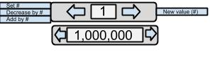

Interactable Counter
This is an interactable counter button. The user can use the arrows to cycle through whole numbers and then click the integer to confirm that number and send its value off through the output channel. I added an extra value variable in the custom box to also output a label variable for other components could listen for. This should take negative numbers into account as well.
Listener Channels:
-
Set value: Listens for an integer from another component to create a new whole number
-
Decrease by value: Listens for an integer to subtract from the current value to create a new value.
-
Add by value: Listens for an integer to add to the current value to create a new value.
Output Channels:
-
Output new value: Takes the current value in the integer box and pushes it out.
